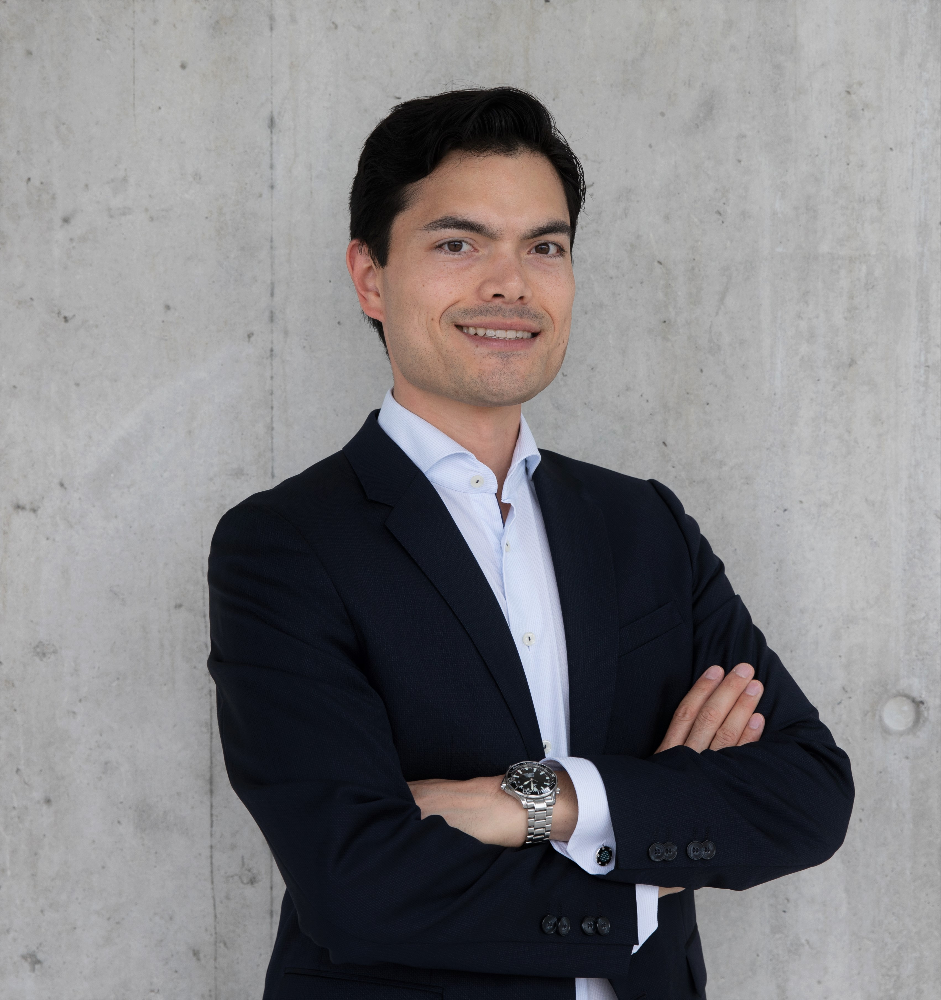

Quantitative investment professional & researcher in mathematical finance, portfolio optimization, and decentralized markets.
I work at the intersection of academic research and quantitative investment practice — bridging rigorous mathematical methods with real-world portfolio construction, risk management, and the design of next-generation financial systems.

I am a quantitative investment professional and Senior Lecturer with a track record spanning academic research, institutional asset management, and digital finance innovation. My work centers on systematic portfolio construction, quantitative risk management, and data-driven investment processes.
Before joining ZHAW, I served as Head of Risk Management and Portfolio Manager at Quantica Capital, and previously as a quantitative analyst in UBS's Chief Investment Office and Risk Methodology. The combination of buy-side, sell-side, and academic perspectives shapes how I approach research questions today — anchored in rigour, but tested against the reality of running money.
My current research at ZHAW's Institute for Wealth & Asset Management explores goal-based investing, drawdown control, and the mechanics of decentralized exchanges. I serve as the academic director of the CAS Blockchain & Decentralized Finance, and as principal investigator on Innosuisse-funded innovation projects in collaboration with Swiss financial institutions.
Stochastic optimization, optimal hedging, and the structural design of derivative-replicating strategies.
Drawdown control, stress testing, and portfolio risk aggregation across multi-asset class portfolios.
Goal-based investing, systematic allocation, and rules-based investment solutions for institutional capital.
Automated market makers, impermanent loss hedging, and liquidity provision in on-chain markets.
Digital Finance
Applied Mathematical Finance, 31(2), 108–129
Ledger, 9, 73–88
Financial Markets and Portfolio Management, 38(1), 93–122
Quantitative Finance, 23(6), 901–911
Journal of Risk and Financial Management, 15(5), 223
The Journal of Financial Data Science, 4(4), 110–132
Including earlier work in partial differential equations, stochastic analysis, and applied mathematics — 700+ citations.
Workshop on Mathematical Finance and Related Issues
Invited talkQuantMinds International
Industry conference12th General AMaMeF Conference
Peer-reviewedMathematical Finance Seminar — Spring 2025
Columbia University · invitedFinance Circle
Industry talkZHAW School of Management and Law · Winterthur, Switzerland
Institute for Wealth & Asset Management. Research on portfolio optimization, goal-based investing, and digital assets. Academic director of the CAS Blockchain & Decentralized Finance. Principal investigator on Innosuisse-funded innovation projects, in close exchange with financial institutions and practitioners.
Quantica Capital AG · Zurich
Built a stress-testing and scenario analysis framework for multi-asset portfolios. Led hedge-fund replication of managed futures and trend-following strategies. Owned client-facing communication on investment strategy, portfolio risk, and performance attribution. Automated risk reporting, portfolio analytics, and exposure monitoring.
UBS AG, Wealth Management · Zurich
Analysis of systematic trading strategies across global asset classes. Research on fund flows, positioning indicators, and market impact for the Chief Investment Office serving ultra-high-net-worth clients.
UBS AG · Zurich
Development of credit portfolio and capital models for regulatory and economic capital. Quantitative modeling of portfolio risk aggregation and dependence structures.
ETH Zurich · Switzerland
Kyoto University · Japan
Initiated and lead the Certificate of Advanced Studies program at ZHAW SML — connecting practitioners, researchers, and policymakers around the mechanics, opportunities, and risks of decentralized financial systems.
Lead module on systematic and discretionary active management, portfolio construction, and performance attribution in the Bachelor's program at ZHAW SML.
Foundational module on the mathematical and economic principles of portfolio construction, derivative instruments, and modern portfolio theory.
Advanced module on quantitative investment, asset allocation, and rules-based portfolio strategies in the Master's program in Banking and Finance.
Applied research projects bridging academic rigor with industry practice, supported by the Swiss Innovation Agency and Swiss financial institutions.
University of Vienna, Austria
Kyoto University, Japan
University of Vienna, Austria
Federal Ministry of Education, Science and Research, Austria — recognising outstanding doctoral dissertations.
Open to research collaborations, industry projects, speaking engagements, and consulting in quantitative investment and decentralized finance. Based in the Zurich area.